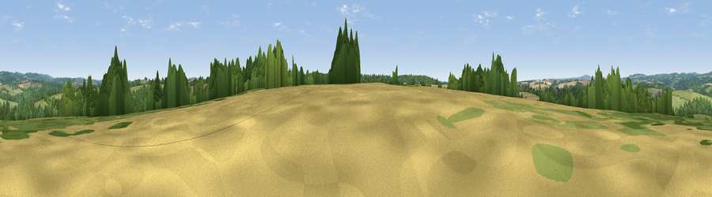

Viewpoint near Mawgan
#37653 in England · top 81% of its area beats it · near Mawgan · access?Where it is
The exact computed spot (SW 71575 24025). Click the marker for map links.
Public access: no public right of way or access land is recorded at this exact spot — it may be on private land. Computed from Natural England's CRoW access layer and OpenStreetMap rights of way — not the legal definitive map. Always verify locally.
The view, rendered

A 360° render of this exact spot computed from the terrain model, tree cover and land cover — summer colours, afternoon light, calibrated against photographs of famous viewpoints. Real trees, hedges and buildings will differ in detail.
The panorama
Grey silhouette: terrain skyline in each direction (720 bearings, Earth curvature and refraction included). Dashed green: skyline with trees (+15 m) and buildings (+8 m) as obstacles. Blue strip: how far the ground is visible on each bearing.
Where the view opens
Wedge length = distance to the farthest visible ground on that bearing (vegetation-aware). Rings at 10, 25 and 50 km.
What fills the view
47% grassland · 34% woodland · 16% cropland · 2% built-up
Angular shares of the visible panorama (visual magnitude), not map area. Landscape diversity 0.48 (0–1 Shannon).
Key numbers
More beautiful places nearby
The staircase of upgrades: each row has a higher view potential than everything closer. Driving times are estimates from straight-line distance, calibrated against real road routing — check an actual route before setting out.
| Place | Direction | Drive | Score |
|---|---|---|---|
| Viewpoint near Gweek | NNE · 3 km | ~7 min | 39.1 |
| Viewpoint near Constantine | N · 6 km | ~12 min | 66.7 |
| Viewpoint near St. Keverne | E · 6 km | ~14 min | 72.2 |
| Viewpoint near Mullion | SSW · 9 km | ~18 min | 72.7 |
| Viewpoint near Porthoustock | ESE · 10 km | ~19 min | 74.0 |
| Viewpoint near Ashton | WNW · 12 km | ~23 min | 81.3 |
| Tregonning Hill | WNW · 13 km | ~24 min | 83.0 |
| St Agnes Beacon | N · 26 km | ~42 min | 86.1 |
50.07236, -5.19364 · source: screening · position refined by local search. Computed location — check access rights before visiting.